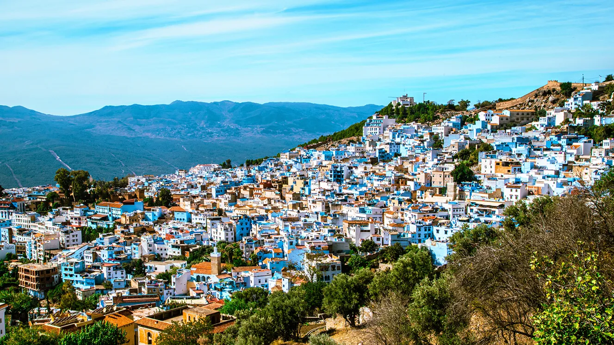

Why You should visit Morocco ?!

Morocco is growing in popularity and it's easy to see why. Here are some of the best reasons to travel to Morocco, an incredibly diverse gem of Northern Africa.
Morocco is growing as a popular tourist destination, as it's an incredibly accessible way to experience north African culture on a budget. Located on the north-western edge of the massive African continent, Morocco is just a quick flight from Europe.
Budget airlines like Ryanair fly to Morocco for less than $100, so it's super easy to fit Morocco into a European travel adventure. If you're coming from elsewhere in the world, Marrakech, Casablanca, and Fez all have major international airports with reliable airlines flying in and out daily.
With such easy flights available, there is no reason not to visit Morocco. This country has desert, mountains, beaches, small villages and big cities; a little something for everyone... definitely one of the top places to go in Africa.
The food is amazing, the culture is unique, and the prices are affordable. There are also a number of cultural tips and things to know before going to Morocco, which will be included in this list.
So if you're still wondering, "why go to Morocco?", here is a list of reasons to travel to Morocco. These are things that I have personally experienced, and I can say I will always cherish the month I spent traveling in Morocco.
If you would like to learn more about these 13 reasons,